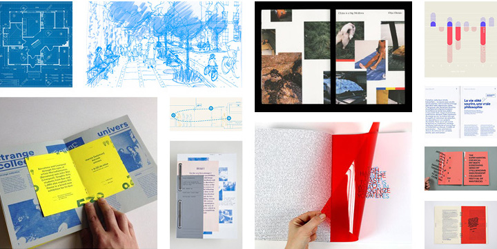

The research process for this project began while studying urban design, sustainable transportation, and democratic space principles at Macalester College and abroad in Copenhagen. The work is inspired by lived experiences during my two years living in Copenhagen where I learned about traffic calming strategies and witnessed them on a daily basis. Additional key resources included Janette Sadik-Khan’s Street Fight, National Association of City Transportation Officials (NACTO)’s Urban Street Design Guide, and pedestrian safety data from the city of Minneapolis.
I also collected primary data on the statistical ease of crossing Lyndale Ave S at 27th St to inform the case study of this intersection in Chapter Three. This entailed 10 trials of attempting to cross the street and calculating the percentage of cars that stopped.
For a full view of sources and data, see references here.
This project included receiving feedback from two potential users: one a transportation planner with lots of expertise in the field and another who is interested in making streets safer but not very knowledgeable about specific traffic calming methods.
Key takeaways from this feedback include: creating more clarity in the layout and language of data visualisations, including two redesigns of the Lyndale Ave case study, and making the case for the economic benefits of improved pedestrian infrastructure.
How can a mundane topic like traffic calming be made exciting and experiential to learn about?
How does one effectively communicate the case for street interventions beyond speed limit changes?
What could Lyndale Ave S become if we use our imaginations?
What are barriers to advocacy?
Who needs to be contacted in this advocacy work?
The creation of this ___-page publication involved various graphic elements and research including moodboarding, film photographs, road diagrams and illustrations (Illustrator), publication layout (InDesign), and substrate/paper research.
You can view my progress platform here.
This publication arms readers with knowledge of traffic safety statistics, best practices for using design to create safer streets, case study redesigns that inspire Minneapolitans to imagine what’s possible, and call to action postcards with accompanying contact and messaging guides to encourage urban residents to take action and bring others on board. The printed piece takes into consideration user and subject matter expert to craft a tactile experience that allows readers to explore the potential for safer streets in Minneapolis.